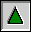
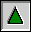

Index
- General information
- History of the Open Class Library FAQ
- How to obtain a copy of the FAQ
- Where to obtain additional information
- Index of samples on Hobbes
- OCL - Compiling
- How to compile
- Required compiler flag
- Errors in IBM's include files
- OCL - Linking
- How to link
- Static linking
- Dynamic linking
- OCL - Miscellaneous
- Application dies when starting
- Application-modal windows
- System-modal windows
- How to assign an icon to a window
- How to prevent the minimized icon from being overwritten
- How to print
- How to convert a native PM item to OCL
- How to create a thread
- Valuesets (WC_VALUESET)
- Custom-drawing in containers
- OCL - Errors
- Error EDC3086
- Error LNK2029
- Error EDC0166, EDC0275, EDC0045 and EDC0046
- OCL - Fixpacks and CSDs
- Contributors
![[Home]](32x32_home_i.gif) 

![[E-Mail]](32x32_mail_o.gif)
Page generated by Stéphane Charette on 1997 November 02
Open Class Library (OCL) FAQ © Stéphane Charette, 1997